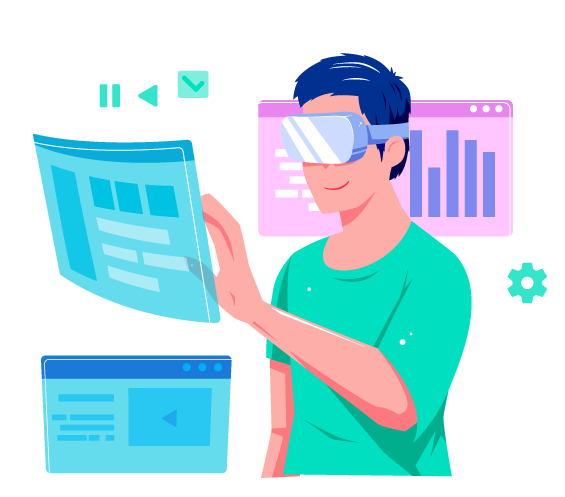
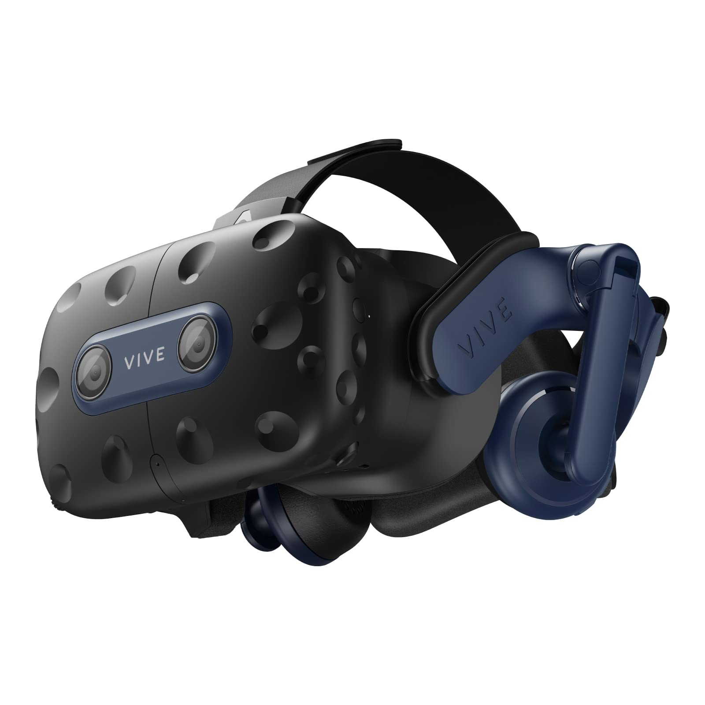
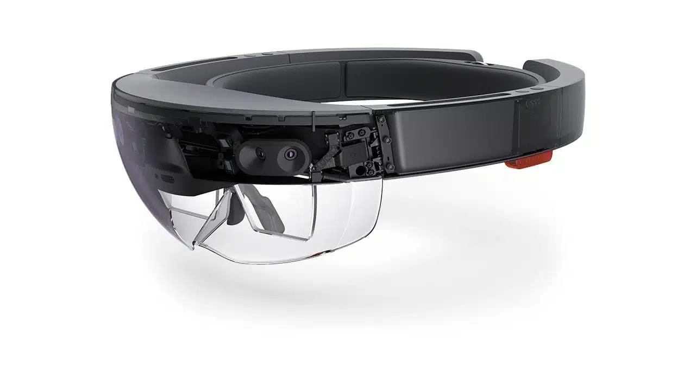

تعد أجهزة الواقع الافتراضي والمدمجة تطورًا رائدًا في عالم التكنولوجيا الحديثة، حيث تقدم تجارب فريدة ومثيرة تمزج بين الواقع والعوالم الرقمية بشكل لم يسبق له مثيل. تمثل هذه الأجهزة طفرة في تفاعلنا مع التكنولوجيا، حيث تنقلنا إلى بُعد جديد من التفاعل والتواصل.
أجهزة الواقع الافتراضي:
في هذا السياق، تأتي أجهزة الواقع الافتراضي لتحول تجاربنا التقنية. تقوم هذه الأجهزة بإنشاء بيئات افتراضية ثلاثية الأبعاد تضم تفاصيل وواقعية لا تقل عن تلك التي نجدها في العالم الحقيقي. باستخدام نظارات الواقع الافتراضي وأجهزة التتبع، يمكن للمستخدم أن يغوص في عوالم مذهلة ويتفاعل معها بشكل فعّال، سواء كان ذلك في مجال الألعاب أو التدريب أو حتى في مجالات الطب والتعليم.
أجهزة المدمج:
من جهة أخرى، تأتي أجهزة المدمج لتوفير تجارب تفاعلية مبتكرة بشكل أكبر. تعتمد هذه الأجهزة على دمج التكنولوجيا مع العناصر الحقيقية في بيئتنا. على سبيل المثال، تقدم النظارات الذكية والأجهزة المرتبطة بالواقع المعزز تفاعلًا فعّالًا مع العالم المحيط، حيث يتم دمج معلومات رقمية مباشرة في الواقع الحقيقي.
معًا، تمثل أجهزة الواقع الافتراضي والمدمج تحولًا نوعيًا في كيفية تفاعلنا مع التكنولوجيا، حيث تمنحنا القدرة على اكتشاف عوالم جديدة وتجارب فريدة تتحد ما بين الواقع والتكنولوجيا بطرق مبتكرة ومثيرة.

العنصر الثاني | الجهاز الأول
Oculus Rift
أوكولوس ريفت هي نظارات الواقع الافتراضي الرائدة التي قدمت تجربة استثنائية. تضم شاشات OLED لرؤية واقعية، وتأتي مع متحكمات Oculus Touch لتوفير تفاعل دقيق. تستفيد من مستشعرات خارجية لتحديد الموقع وتحقيق تتبع حركة دقيق. توفر تجربة واقع افتراضي مدهشة ومغامرة ثلاثية الأبعاد.
الشركة المطورة: تم تطويرها بواسطة شركة Oculus VR.
مواصفات فنية:
شاشات OLED عالية الدقة لرؤية واقعية.
متحكمات Oculus Touch لتجربة تفاعل دقيقة.
مستشعرات خارجية لتحديد الموقع وتحقيق تتبع حركة دقيق.
تجربة المستخدم: توفير تجربة واقع افتراضي غامرة ومتقدمة مع تركيز كبير على التفاصيل الرسومية والتفاعل الشامل.
العنصر الثالث | الجهاز الثاني
HTC Vive
HTC Vive:
إتش تي سي فايف هي نظارات الواقع الافتراضي التي تم تطويرها بالتعاون بين HTC وشركة Valve Corporation. تتميز بشاشات OLED عالية الجودة ونظام تتبع لاسلكي، مع متحك
الشركة المطورة: تم تطويرها بواسطة HTC بالتعاون مع Valve Corporation.
مواصفات فنية:1
شاشات OLED
عالية الجودة.
نظام تتبع لاسلكي ومتحكمات Vive
لتجربة تفاعل دقيقة.
مستشعرات لتحديد الموقع لتوفير تجربة تفاعلية مكثفة.
تجربة المستخدم: تفاعل غني في بيئة ثلاثية الأبعاد مع إمكانيات متقدمة للتفاعل والتحكم.

العنصر الرابع | الجهاز الثالث
PlayStation VR
بلايستيشن في آر هي نظارات الواقع الافتراضي المتوافقة مع جهاز بلايستيشن، تقدم شاشة OLED عالية الجودة وتجربة تفاعلية ملائمة لأجهزة PlayStation 4 و PlayStation 5.
الشركة المطورة: تم تصميمها لتكون متوافقة مع منصة PlayStation من قِبل Sony.
مواصفات فنية:
تعتمد على قدرات PlayStation، مع شاشة OLED عالية الجودة.
نظام تتبع للحركة لتحسين التفاعل داخل الألعاب.
تجربة المستخدم: تقديم تجربة واقع افتراضي مريحة ولائقة لأجهزة PlayStation، مع مجموعة واسعة من الألعاب المتوافقة.
العنصر الخامس | الجهاز الرابع
Microsoft HoloLens
مايكروسوفت هولولينز تمثل نظارات الواقع المختلط، تمزج بين الواقع الافتراضي والواقع الحقيقي. تأتي مع شاشات ذكية وتقنيات تتبع ثلاثية الأبعاد لتحقيق تفاعل فريد وتطبيقات متنوعة.
نوع الجهاز: نظارات الواقع المختلط.
مواصفات فنية:
شاشات ذكية متقدمة مع إمكانيات تتبع ثلاثية الأبعاد.
تقنيات متقدمة للواقع المختلط لتمكين تفاعل مع العالم الحقيقي والأشياء الرقمية.
تجربة المستخدم: توفير تجربة تفاعلية فريدة تمزج بين العناصر الواقعية والرقمية لأغراض تعليمية وصناعية.

العنصر السادس | الجهاز الخامس
Oculus Quest
أوكولوس كويست هي نظارات الواقع الافتراضي المحمولة، تعتمد على نظام محمول بدون الحاجة إلى جهاز كمبيوتر خارجي، مما يوفر للمستخدمين حرية الحركة وسهولة الوصول.
هذه نبذة عن بعض الأجهزة البارزة في عالم الواقع الافتراضي، وتعكس التطور المستمر في مجال التكنولوجيا لتوفير تجارب مذهلة ومتقدمة.
نوع الجهاز: نظارات الواقع الافتراضي المحمولة.
مواصفات فنية:
نظام محمول بدون الحاجة إلى جهاز كمبيوتر خارجي.
تقنيات تتبع حركة داخلية لتوفير حرية الحركة.
تجربة المستخدم: سهولة الاستخدام والتنقل مع إمكان